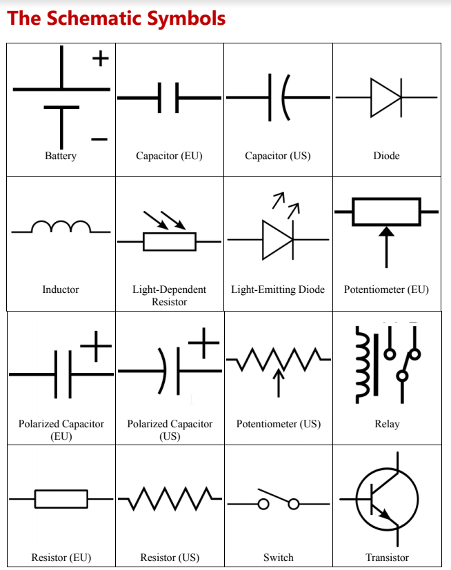

In class today, we learn how to use embroidery machine to embroider hats and other stuffs. I choose to embroider a hat for track because for most of the time track season is cold. Therefore, the first step I need to do is fix the hat on the splint with one soft material on the bottom and water soluable stablizer on top. Then I need to set up the embroidery machine, choosing fonts, size and the words I want to embrioder. Then I just need to make sure the laser light is on the right place so the embroidery would be in the middle. The embroidering process only took a minute and I got a pretty hat! I like my hat so much!

Since I went to model UN on Friday, I missed the class of soldering. After I came back, Mr.Gerber gave me a electric circuit which is about the voice controlled LED light. If I solder every parts of the circuit right, the brightness of LEDs wwould change according to how loud my voice is. The metal I used for soldering is tin which is unbelievablly soft and malleable. I turned on the the soldering station first and it would heat up in a few seconds. Then I needed to use the pen-like part of the soldering station to melt the tin in order to solder things such as resistors and LEDs on the circuit. The soldering part is acutally really interesting. However, I soldered the integrated circuits on the cricult in a wrong way because I didn't know that the special integrated circuit is consisted of two parts. One of the inconvinience abotu soldering is that once you soldered, you can't really redo it. Next time I need to read the circuit diagram more carefully when I am doing circuit.

In the class, we needed to work on our Arduino IDE projects. There are 15 different circuits that we needed to finish in total.
We need to finish these arduino circuits according to the circuits diagram. Making such Arduino circuits is hard. For such circuits,
if I mess up a single wires or a single resistor, the whole circuit would not work. It's a painful process. Sometimes I really need
to ask for help from my friends near me or Mr.Gerber in order to really figure out what I did wrong. However, overall I enjoyed the
process of making these circuits because they gave me the sense of satisfaction.